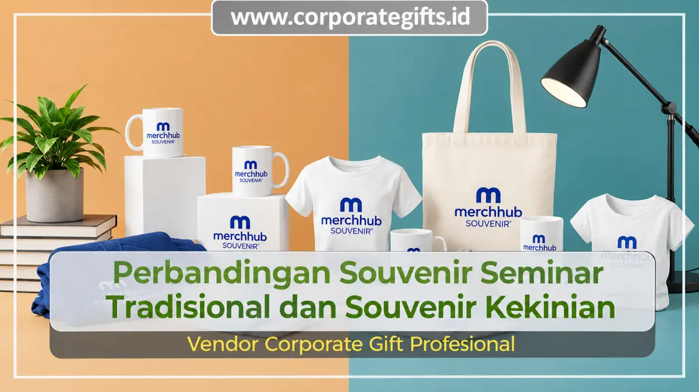

Corporate Gifts ID - Souvenir seminar tradisional seperti bolpoin sablon, notebook kertas standar, dan kalender meja unggul pada efisiensi biaya hemat serta perputaran produksi yang cepat. Sementara itu, souvenir seminar kekinian seperti tumbler stainless steel, tote bag kanvas ramah lingkungan, dan powerbank berlogo laser unggul pada persepsi premium, durabilitas jangka panjang, serta kekuatan penanaman reputasi brand korporat.
Dalam penyelenggaraan agenda bisnis, pelatihan kelembagaan, hingga konferensi akademis, souvenir seminar bukan hanya cenderamata pelengkap acara, melainkan instrumen komunikasi strategis agar identitas penyelenggara melekat kuat di ingatan para peserta.
Poin Kunci Perbandingan Suvenir Seminar:
- Karakteristik Tradisional: Mengandalkan alat tulis standar, berbiaya sangat terjangkau, cocok untuk kuota ratusan hingga ribuan peserta dengan keterbatasan anggaran.
- Nilai Tambah Kekinian: Mengusung tema lifestyle fungsional, material ramah lingkungan (eco-friendly), serta teknologi modern yang tahan dipakai bertahun-tahun.
- Daya Retensi Branding: Suvenir kekinian menawarkan eksposur promosi berulang setiap hari karena sering dibawa ke kantor atau ruang publik.
- Penentuan Pilihan: Sesuaikan antara ketersediaan dana anggaran (RAB), profil demografi audiens peserta, dan citra institusi yang ingin ditampilkan.
Pentingnya Pemilihan Cenderamata Seminar yang Tepat
Dahulu, pengadaan souvenir seminar kerap dianggap sebagai formalitas belanja rutin. Namun, seiring dengan semakin kritisnya audiens terhadap nilai keberlanjutan dan fungsionalitas barang, suvenir yang tidak bermanfaat sering kali berakhir di tempat sampah atau terlupakan di laci meja kerja.
Oleh karena itu, memahami perbedaan karakter antara produk cenderamata model tradisional dan gaya kekinian menjadi langkah awal yang krusial bagi panitia pengadaan.
Mengenal Souvenir Seminar Tradisional: Contoh, Kelebihan & Kekurangan
Souvenir seminar tradisional merujuk pada paket cenderamata konvensional yang telah digunakan secara turun-temurun dalam berbagai kegiatan seminar publik, bimbingan teknis (bimtek), dan sosialisasi dinas.
Contoh Produk Tradisional Populer:
- Bolpoin plastik promosi dengan sablon logo 1-2 warna.
- Block note jilid lem atau spiral kawat ukuran A5 sederhana.
- Stopmap kertas atau folder plastik untuk menaruh berkas materi.
- Pin bros, gantungan kunci akrilik, atau kalender dinding tahunan.
Kelebihan Souvenir Tradisional:
- Sangat Hemat Biaya: Memungkinkan pengadaan dalam volume ribuan paket tanpa membebani kas kepanitiaan.
- Waktu Produksi Cepat: Bahan baku melimpah dan proses pengerjaan relatif kilat.
- Langsung Fungsional: Alat tulis dapat langsung dipakai mencatat saat sesi pemateri berlangsung.
Kekurangan Souvenir Tradisional:
- Kesan visual cenderung umum, standar, dan kurang eksklusif.
- Masa simpan pendek dan rentan rusak karena mutu material dasar.
- Tingkat retensi brand rendah karena peserta sudah terbiasa menerima item serupa.

Kombinasi tumbler stainless steel dan notebook eksklusif menciptakan impresi profesional yang mengangkat wibawa acara korporat.
Mengenal Souvenir Seminar Kekinian: Ciri Khas & Nilai Tambah
Souvenir seminar kekinian menonjolkan integrasi estetika modern, daya guna jangka panjang, dan keberlanjutan lingkungan hidup (sustainability). Produk dalam kategori ini dirancang agar tetap relevan digunakan di ruang kantor maupun aktivitas harian peserta di luar agenda seminar.
Contoh Produk Kekinian Favorit Korporat:
- Tumbler stainless steel vacuum flask tahan panas dingin dengan grafir laser presisi.
- Tote bag kanvas tebal berdesain tipografi artistik atau tas serbaguna laptop.
- Powerbank berkapasitas besar, flashdisk kartu OTG, atau wireless presenter.
- Pouch organizer perlengkapan kabel gawai dan cutlery set ramah lingkungan.
Kelebihan Souvenir Kekinian:
- Prestige & Profesionalitas: Memancarkan kelas penyelenggara acara yang bonafide dan visioner.
- Eksposur Jangka Panjang: Digunakan berulang kali oleh peserta dalam aktivitas harian, memberikan promosi pasif yang berkelanjutan.
- Dukungan Terhadap ESG: Pilihan produk reusable mendukung target pengurangan sampah plastik sekali pakai.
Kekurangan Souvenir Kekinian:
- Alokasi biaya per unit yang relatif lebih tinggi dibanding produk konvensional.
- Memerlukan waktu penyiapan desain mockup serta proses produksi custom yang lebih matang.
Tabel Perbandingan Souvenir Seminar Tradisional vs Kekinian
Berikut rangkuman perbandingan parameter kunci untuk memudahkan analisis komparatif tim pengadaan:
| Parameter Penilaian | Souvenir Tradisional | Souvenir Kekinian |
|---|---|---|
| Rentang Anggaran | Ekonomis (Rp 10.000 - Rp 35.000 / paket) | Investasi Menengah - Premium (Rp 50.000 - Rp 250.000+) |
| Kesan Pertama (Impresi) | Standar, fungsional praktis saat acara | Mewah, prestisius, dan inovatif |
| Masa Pakai Barang | Pendek (hitungan minggu hingga habis) | Panjang (1 hingga 3 tahun penggunaan) |
| Durasi Produksi | Sangat cepat (3 - 7 hari kerja) | Menengah (7 - 14 hari kerja tergantung kustomisasi) |
| Dampak Penjenamaan | Pengenalan nama dasar (awareness instan) | Penguatan loyalitas, citra modern, dan kepedulian lingkungan |
Panduan Memilih: Mana yang Paling Tepat untuk Acara Anda?
Tidak ada pilihan yang mutlak salah atau benar. Ketepatan pemilihan cenderamata ditentukan oleh harmonisasi tiga pilar utama:
- Skala Anggaran Acara: Jika instansi Anda mengelola seminar umum berskala ribuan mahasiswa atau masyarakat luas dengan dana terbatas, suvenir tradisional terbukti paling efektif secara matematis.
- Profil Audiens Sasaran: Apabila seminar ditujukan kepada jajaran direksi, dokter, advokat, pejabat pemerintahan, atau mitra B2B berlevel manajerial, suvenir kekinian adalah keharusan mutlak untuk menjaga gengsi institusi.
- Tujuan Komunikasi Korporat: Bila perusahaan sedang mengkampanyekan nilai keberlanjutan (ESG) atau transformasi teknologi digital, kemasan suvenir eco-friendly berteknologi modern akan memperkuat narasi tersebut secara nyata.
Pertanyaan Seputar Souvenir Seminar (FAQ)
Kesimpulan dan Rekomendasi Solusi
Souvenir seminar tradisional maupun kekinian masing-masing memiliki peran strategis tersendiri. Kuncinya terletak pada kecermatan memetakan ekspektasi peserta dan target komunikasi penjenamaan perusahaan. Dengan perencanaan paket merchandise yang matang, setiap suvenir yang dibagikan akan berbalik menjadi investasi promosi jangka panjang yang sangat menguntungkan.

Ditulis oleh: Sholikhatun Nikmah
Creative Product Designer & Bespoke Packaging ConsultantSpesialis perancangan desain produk merchandise kustom, kemasan unik korporat, dan kurasi cenderamata seminar di CorporateGifts.ID. Berpengalaman memadukan fungsi utilitas dan estetika visual untuk beragam agenda instansi pemerintah dan swasta nasional.
Lihat Profil Lengkap & Panduan Lainnya